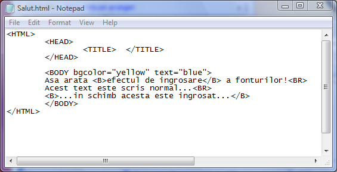
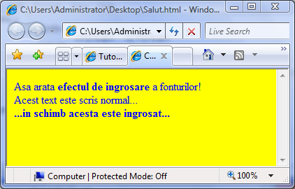

Fonturi ingrosate
De multe ori este necesara evidentierea caracterelor prin ingosare. Acest lucru este
posibil cu ajutorul perechii de etichete B (bold) respectiv /B.
In exemplul urmator este ilustrat modul in care anumite portiuni de text, cuprinse intre cele doua
etichete vor fi afisate ingrosat in fereastra browserului:


Inapoi la Formatare fonturi...